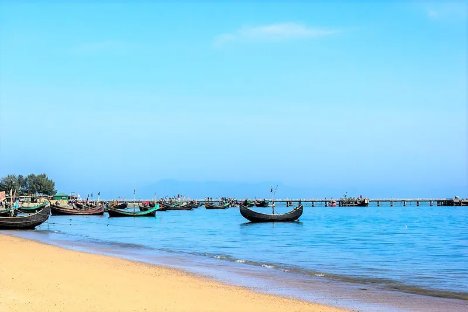
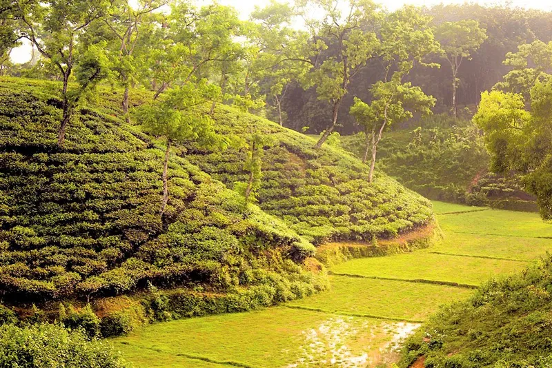
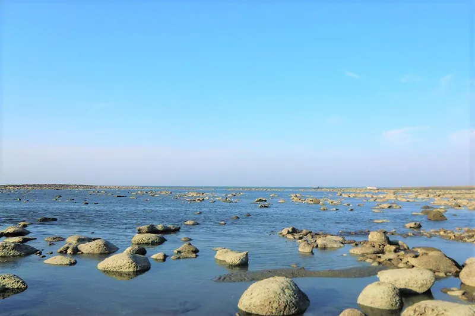

Cox's Bazar
The fresh seafood, long natural beaches, local hospitality, and the nearby attractions are the notable reasons why Coxs’s Bazar is famous to both local and international tourists. It is the longest natural sea beach globally, with several beachside hotels making it easier for people to spend time at the beach. Near Cox’s Bazar town, other than the Cox’s Bazar sea beach, several tourist attractions attract travellers all around the year.

Srimangal
The green tea fields make Srimangal a famous tourist place in Bangladesh. It is located in the Moulvi Bazar District of Sylhet Division. It is the tea capital of Bangladesh due to a large number of tree plantations and the origin of the seven coloured tea.

St-Martin
The only coral island in Bangladesh is St. Martin’s Island. Due to the excessive coconut trees on the island, this island is known as “Narikel Zinzira” in Bengali, which means ‘Coconut Island’. The island is 9 km south of Coxs Bazar.